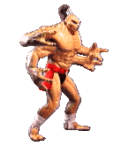

-
Johnny Cage #01

Uma superestrela das artes marciais treinada por Grandes Mestres de todo o mundo, Cage utiliza seus talentos na telona. Ele é o atual campeao de bilheteria e estrela de filmes como Punho do Dragao e Punho do Dragao II, alem do premiado Violencia Repentina.
-
Kano #02

Um mercenario, bandido, ladrao extorsionista - Kano vive uma vida de crime e injustiça. Ele e um membro devoto dos Dragoes Negros, um grupo perigoso de loucos sanguinarios temidos e respeitados em todos os circulos internos do crime.
-
Sub-Zero #03
O nome ou identidade real deste guerreiro e desconhecido. No entanto, com base nas marcacoes de seu uniforme, acredita-se que ele pertença aos Lin Kuei, um lendario cla de ninjas chineses.
-
Sonya #04

Sonya e membro de uma unidade de elite das Forcas Especiais dos Estados Unidos. Sua equipe estava na trilha da organizacao dos Dragoes Negros, liderada por Kano. Eles os seguiram ate uma ilha desconhecida, onde foram emboscados pelo exercito pessoal de Shang Tsung.
-
Raiden #05
O nome Raiden na verdade e o de uma divindade conhecida como O Deus do Trovao. Rumores dizem que ele recebeu um convite pessoal de Shang Tsung e assumiu a forma de um humano para competir no Torneio.
-
Liu Kang #06
Antes um membro da super secreta Sociedade Lotus Branca, Liu Kang deixou a organizacao para representar os templos Shaolin no Torneio. Kang e forte em suas crencas e despreza Shang Tsung.
-
Scorpion #07
Assim como Sub-Zero, o verdadeiro nome e origem de Scorpion nao sao conhecidos. Ele demonstrou ocasionalmente desconfianca e odio em relacao a Sub-Zero. Entre os ninjas, isso geralmente e um sinal de clas opostos.
-
Goro #08
Um dragao meio-humano de quase 2000 anos, Goro permanece invicto nos ultimos 500 anos.Ele conquistou o titulo de grande campeao apos derrotar O Grande Kung Lao,um monge Shaolin.
-
Shang Tsung #09
Um poderoso e mortal feiticeiro, Shang Tsung e um metamorfo que precisa consumir almas para sustentar sua saude e vida. Ele personifica a astucia e a decadencia, como simbolizado por sua preferencia por festas luxuosas, palacios grandiosos e roupas elegantes.